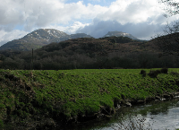

<!DOCTYPE html PUBLIC "-//W3C//DTD XHTML 1.0 Transitional//EN" "http://www.w3.org/TR/xhtml1/DTD/xhtml1-transitional.dtd">
<html>

	<head>
	
		<meta content="text/html; charset=utf-8" http-equiv="Content-Type" />
		<title>Erw Fawr Outdoor Pursuits</title>
		<link href="css/styles.css" rel="stylesheet" type="text/css" media="screen"/>
		<script src="//ajax.googleapis.com/ajax/libs/jquery/1.10.2/jquery.min.js"></script>	</head>
		<script src="//ajax.googleapis.com/ajax/libs/jqueryui/1.10.3/jquery-ui.min.js"></script>
		<script type=text/javascript>
		
	</head>
		
	
			</div>
			<div id="contact"> 
			<h3><a href=contacts.html>Contact Us Now</a></h3>
			<ul> 
				<li></li>
				<li></li>
			</ul>
			</div>
			</div>
			<div id="topnav">
				<ul>
					<li><a href="home.html"> Home </a></li> 
					<li><a href="accomodation.html"> Accomodation </a></li> 
					<li><a href="cottage booking and availability.html"> Cottage Booking and Availabilty </a></li> 
					<li><a href="links.html"> Links </a></li> 
					<li><a href="membership.html"> Membership </a></li> 
					<li><a href="newsletters.html"> Newsletters </a></li> 

				</ul>
			</div>
			<div id="banner">
			 
			
			
			</div>
			<div id="subbanner" style="width: 99%">
				<h3> Home </h3>
			</div>
			<div id="content">
			<h1>What is Erw Fawr?</h1>
			<p>Ewr Fawr is an independent outdoor pursuits club based in Coventry; the club owns an accommodation facility in North Wales which 
			is rentable for members.</p>
			<h2> A Brief History of the club </h2>
			<p>The Club was founded in 1970 by employees of the Standard Motor Company. The Club then became known as "The Standard 
			Triumph Rambling Club" and an advert was placed in a North Wales newspaper requesting the use of remote cottage as a base for walking 
			expeditions. A Major Roach answered the advert and offered the use of a former farm workers cottage which was built on land reclaimed 
			from the sea more than 150 years ago. Following the death of Major Roach in 1991 the Club purchased the property. At the time of 
			purchase the club changed the name to Erw Fawr Rambling Club, Erw Fawr being the name of the cottage, Since then the name has changed 
			to "Erw Fawr Outdoor Pursuits Club" The cottage is now used for many outdoor activities.</p>
			
			<ul>
				<li>
				</li>
				<li>
				</li>
				<li>
				</li>
			</ul>
			
			</div>
			<div id="rightside">
			<h2>Recent News</h2>
			<p>	
				Jobs completed on July 2012 Working Week-</p>
			<p>	
				End
				Driveway pot holes repaired.
			</p>
			<p>	
				Basin taps changed.
			</p>
			<p>	
				Hallway and Snowdon bedroom emulsioned.</p>
			<p>	
				Kitchen wall partially boarded.
			</p>
			<p>	
				Rear shower room mixer replaced.
			</p>
			<p>	
				Tiling above cookers completed.
			</p>
			<p>	
				The fire Alarm and Emergency lights were tested.
			</p>
			<p>	
				Additional information - updated January 2013
			</p>
			<p>	
				Annual fire safety risk assessment completed October 2012
			</p>
			<p>	
				Our next major project will be to re-roof the main cottage building.
			</p>
			
			</div>
			<div id="footer"> 
			<h3><a href=contacts.html>Contact Us Now</a></h3>
			<p> &copy;Copyright 2013 Thomas Willington (Website Author) All rights reserved </p>
			<p> Site Last Updated 23/01/2014 </p>
			</div>
			</div>
	</body>

</html>
